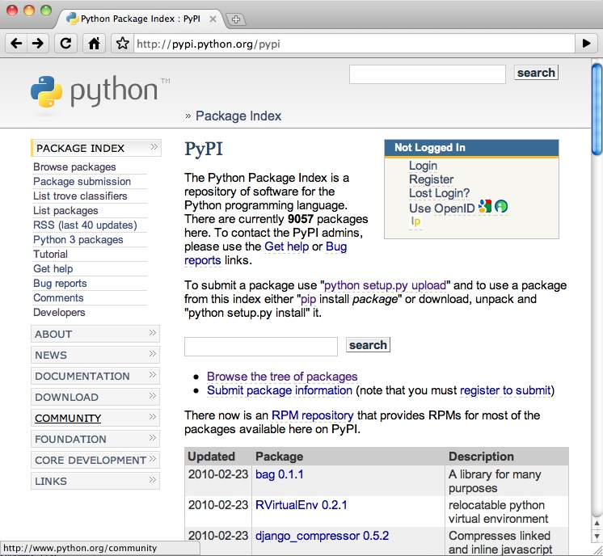

The Python Package Index (PyPI), formerly known as the Cheeseshop, is to Python what CPAN is to Perl: a central repository of projects and distributions.
ノート
XXX put here the Monty Python Cheeseshop extract
PyPI is located at http://pypi.python.org and contains more than 9000 projects registered by developers from the community.
Tools like Pip or zc.buildout are using PyPI as the default location to find distributions to install. When pip install Foo is called, it will browse PyPI to find the latest available version of the Foo project using The Simple Index Protocol. If it finds it, it will download it and install it automatically.
This automatic installation ala Pip Installs Python (Pip) will work only if the distribution is using the Distutils-based structure and contains a setup.py file.
This means that any serious Python project should use Distutils (see the basics for doing this) and should at the minimum be registered at PyPI. Uploading releases there is also a good practice.
ノート
??? Why should a project at a minimum register at PyPI? good practice, yes; at a minimum, no
Registering a project at PyPI is done by using Distutils‘ register command. This command performs a simple HTTP post using basic authentication with the login name and password stored in the .pypirc file located in your home directory. This login has to be registered at PyPI, so you should go there and create an account before running register for the first time.
Another option is to call register once on any Distutils-based project. It will register the new account for you and all you’ll have to do is to reply to the confirmation e-mail PyPI will send you:
$ python setup.py register
running register
warning: register: missing required meta-data: version
We need to know who you are, so please choose either:
1. use your existing login,
2. register as a new user,
3. have the server generate a new password for you (and email it to you), or
4. quit
Your selection [default 1]:
...
Once this is done, register will ask you if you want to save your login information in the .pypirc file. By default, this will store the login name and the password:
[distutils]
index-servers =
pypi
[pypi]
username:tarek
password:sigourney_as_an_avatar_is_scary
For security reasons, starting at Python 2.6, you can remove the password from the file if you want register to prompt you to type it everytime.
ノート
A recent GSoC project called Keyring was created in 2009 in order to use any available system keyring like KWallet or KeyChain to store the PyPI password. The project exists and may be used in Distutils by the register and upload commands.
Once your account is ready, registering it at PyPI will create a new web page there, using the metadata fields of your project.
A good practice is to use reST, and make sure your long_description field doesn’t contain any reStructuredText syntax error. See rest_example for a quick introduction on how to write a reST compatible field.
To perform a check, install docutils by using Pip (pip install docutils) and run:
$ python setup.py --long-description | rst2html.py > /dev/null
Under Windows, make sure the sys.prefix + ‘Scripts/’ path is in the PATH environment variable and run:
$ python.exe setup.py --long-description | rst2html.py > dummy.html
If your text contains any reST error or warning, they will be displayed.
Starting at Python 2.7, you can use the check command instead of calling the rst2html.py script, as long as docutils is installed:
$ python setup.py check
The check command will check that all fields are compliant before you register the project at PyPI.
PyPI also allows developers to upload their project’s distributions. This can be done manually via a web form, but also through Distutils by using the upload command.
This command will upload freshly created archives via HTTP to PyPI. The usual way to perform this is to call upload right after register and the commands used to create archives. For instance, to upload a source distribution and update the project’s page, one may do:
$ python setup.py register sdist upload
Note that you can upload several archives in one step if wanted:
$ python setup.py register sdist bdist upload
A good practice when uploading distributions at PyPI is to always upload the source distribution, unless your project is not open source of course. Binary distribution are optional especially if your project doesn’t contain any extension to be compiled. This will help automatic installers like Pip to get and install your project on any platform. Uploading only a binary distribution will restrict automatic installation to the platform and Python version it was compiled with.
Besides its web pages, PyPI provides a tree structure at http://pypi.python.org/simple called the Simple Index. This structure allows installers like Pip to look for distribution archives.
For example, calling:
$ pip install distribute
will look at the http://pypi.python.org/simple/distribute page, which is a list of URLs for the Distribute project. These URLs include:
- the Distribute archives uploaded at PyPI
- a link to the project’s home page
- extra links contained in the project’s description fields
The Package Index follows these rules (taken from Setuptools’ documentation):
Its pages are in HTML
Individual project version pages’ URLs must be of the form base/projectname/version, where base is the package index’s base URL. The base URL for PyPI is : http://pypi.python.org/simple.
Omitting the /version part of a project page’s URL (but keeping the trailing /) should result in a page that is either:
Depending on the project’s configuration, PyPI will display a) or b).
Individual project version pages should contain direct links to downloadable distributions where possible. The project’s “long_description” field may contain URLs that will be displayed.
Where available, MD5 information should be added to download URLs by appending a fragment identifier of the form #md5=..., where ... is the 32-character hex MD5 digest.
Individual project version pages should identify any “homepage” or “download” URLs using rel="homepage" and rel="download" attributes on the HTML elements linking to those URLs. Use of these attributes will cause EasyInstall to always follow the provided links, unless it can be determined by inspection that they are downloadable distributions. If the links are not to downloadable distributions, they are retrieved, and if they are HTML, they are scanned for download links. They are not scanned for additional “homepage” or “download” links, as these are only processed for pages that are part of a package index site.
The root URL of the index, if retrieved with a trailing /, must result in a page containing links to all projects’ active version pages.
(Note: This requirement is a workaround for the absence of case-insensitive safe_name() matching of project names in URL paths. If project names are matched in this fashion (e.g. via the PyPI server, mod_rewrite, or a similar mechanism), then it is not necessary to include this all-packages listing page.)
If a package index is accessed via a file:// URL, then EasyInstall will automatically use index.html files, if present, when trying to read a directory with a trailing / on the URL.
ノート
XXX pointer to PyPI developer doc + demo with yolk
Within the last few years, PyPI has become a first class citizen in the Python development ecosystem. For instance Plone developers that are using zc.buildout to install Plone-based applications are making hundreds of calls to PyPI each time they build their projects. That’s because many web applications are using hundreds of small Python distributions nowadays.
This has a bad side effect: if PyPI is down, it becomes impossible to build some applications. PyPI acts as a Single Point of Failure (SPOF).
The PyPI server is quite robust and its uptime is probably around 99.99%, although people hit the SPOF problem once or twice per year. The community has started to develop strategies to avoid it:
In the last year, PEP 381 was added to describe a mirroring protocol and set up an official “ring” of PyPI mirrors. This system should be ready by the end of the year 2010, and will provide a DNS entry under mirrors.pypi.org listing all mirrors IPs. This will allow tools like Pip Installs Python (Pip) to list all mirrors and pick the closest one, or fall back in case a server is down.
ノート
XXX explain here that other servers can have a pypi feature (like plone.org, or private)
ノート
XXX explain that pip can point to any pypi-like server
ノート
XXX conclude on the multiple-index merge idea